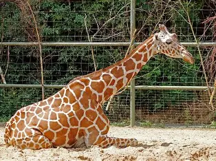

JIRAFA

Es un mamífero conocido por ser el animal más alto del mundo. Tiene el cuello y las patas muy largos, y
su cuerpo está cubierto de manchas. Vive en las sabanas de África y se alimenta principalmente de hojas de los árboles.